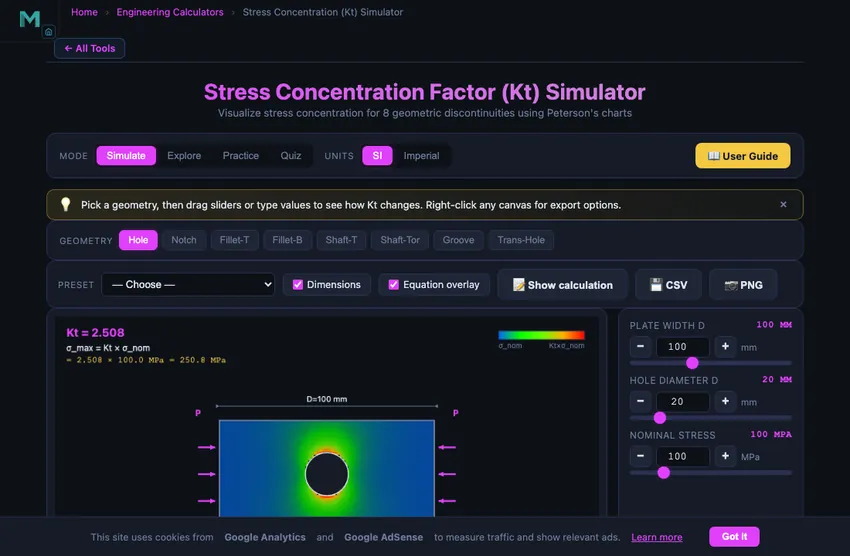

Stress Concentration Factor (Kt) Calculator
Visualize stress concentration for 8 geometric discontinuities using Peterson's charts
σmax = Kt × σnom. For a small circular hole in a wide plate the classic value is Kt = 3.00; it falls as the hole grows relative to the plate.
Σ Live equations — values substituted from current state
📈 Kt history — recent Kt values as you adjust sliders
The chart records the last 60 Kt evaluations. Move sliders to populate.
🧠 What-if coach — suggestions to reduce Kt
1 Overview
The Stress Concentration Factor (Kt) Calculator visualises how geometric discontinuities — holes, notches, fillets, and grooves — amplify local stress compared to the nominal (average) stress. It implements Peterson’s chart curve fits for 8 common geometries covering flat plates and round shafts under tension, bending, and torsion. The canvas displays a colour-mapped stress field showing exactly where peak stress occurs.
The stress concentration factor Kt is defined as σmax = Kt × σnom. A plate with a small central hole under tension has Kt ≈ 3.0, meaning the stress at the hole edge is three times higher than the average stress across the plate. Understanding Kt is essential for preventing fatigue cracks, optimising fillet radii, and designing safe components.
2 Entering the Inputs
The simulator opens in Simulate mode with the “Hole” geometry (plate with central hole under tension). The top canvas shows a colour-mapped stress field, and the bottom canvas plots the Kt vs. geometry ratio curve from Peterson’s charts. A readout panel displays Kt, σnom, σmax, and the current geometry ratio.
Click any of the 8 geometry buttons (Hole, Notch, Fillet-T, Fillet-B, Shaft-T, Shaft-Tor, Groove, Trans-Hole) to switch between configurations. Each geometry has its own set of dimension sliders that appear in the controls panel. Adjust sliders to see how Kt changes with the geometry ratio.
3 Reading the Result
The 8 geometries are: (1) Plate with centre hole — tension, (2) Plate with edge notch — tension, (3) Plate with shoulder fillet — tension, (4) Plate with shoulder fillet — bending, (5) Round shaft with fillet — tension, (6) Round shaft with fillet — torsion, (7) Round shaft with groove — tension, (8) Round shaft with transverse hole — tension.
Each geometry has sliders for the key dimensions (e.g., hole diameter d, plate width D, fillet radius r). As you adjust a slider, the Kt value updates based on Peterson’s polynomial curve fit, the colour-mapped stress field redraws, and a marker moves along the Kt chart curve. The nominal stress σnom uses the net cross-section (after removing the discontinuity) for plates, or the full cross-section for shafts depending on the convention.
A larger fillet radius always reduces Kt — sharp corners (r → 0) create very high stress concentrations, while generous fillets bring Kt closer to 1.0.
4 The Formulas Behind It
Explore mode provides educational content in four categories: Fundamentals (definition of Kt, nominal stress conventions, stress raiser concept), Plate Geometries (hole in plate, edge notch, shoulder fillet), Shaft Geometries (stepped shaft, groove, transverse hole), and Design Methods (notch sensitivity, fatigue Kf, Peterson’s chart usage, mitigation strategies).
Pay particular attention to the distinction between the theoretical Kt (geometry-only) and the fatigue Kf = 1 + q(Kt − 1), which accounts for material notch sensitivity. For fatigue design, Kf is more relevant than Kt.
5 Try a Problem
Practice mode generates random problems asking you to calculate σmax given Kt and σnom, or to look up Kt from given geometry ratios. Enter your numeric answer, click Check, and use Show Solution for a step-by-step walkthrough. Click Next for another problem. Your running score is displayed.
Quiz mode presents 5 questions per session covering Kt lookup, σmax calculation, geometry identification, and design recommendations. After completing all questions, your score and detailed review are displayed.
6 Units, Presets, Export & Keyboard
Use the SI / Imperial unit toggle in the top control bar to switch all dimensions (mm ↔ inch) and stresses (MPa ↔ ksi) at once. Internal calculations always stay in SI; the toggle only changes how values display in sliders, readouts, and dimension labels on the canvas.
The Preset dropdown loads canonical configurations (small hole / wide plate, sharp shoulder, generous fillet, semicircular notch, etc.) so you can compare reference cases without typing values. Each slider has a companion number input with [−] [+] stepper buttons — the value is two-way bound to the slider.
Right-click the stress canvas or the Kt chart for a context menu (Export PNG, Export CSV, Copy Kt value, Reset). The action bar above the canvas also exposes CSV (Kt curve data) and PNG (canvas snapshot) export buttons. Use the Dimensions and Equation overlay checkboxes to clean up the canvas when capturing screenshots. Keyboard: arrow keys nudge a focused slider; Escape closes the calculation modal.
7 Learning Panels & Show Calculation
Below the chart, three collapsible Learning Panels deepen the analysis: Live Equations renders the active Peterson polynomial in LaTeX with values substituted; Kt History sparkline tracks the last 60 Kt evaluations as you sweep parameters; the What-if Coach reads the current state and suggests the most effective design change to reduce Kt.
Click Show calculation in the action bar to open a modal that walks through the full derivation: ratio → Peterson polynomial → Kt → nominal stress definition → σmax. This is what you would write on a homework or design-review sheet.
8 Tips & Best Practices
- A small hole in a wide plate under tension has Kt ≈ 3.0. This is the most frequently cited stress concentration case.
- Increasing the fillet radius is the most effective way to reduce Kt at a shoulder transition. Even a small radius dramatically lowers peak stress.
- For fatigue design, use Kf instead of Kt: Kf = 1 + q(Kt − 1), where q is the notch sensitivity (0 to 1). Ductile materials have lower q for large radii.
- Under static loading of ductile materials, stress concentration is less critical because local yielding redistributes the stress. Under cyclic loading, it is critical.
- The Kt chart curve for each geometry is a polynomial fit from Peterson’s data. Verify your hand-calculated Kt against the simulator’s curve.
- Try all 8 geometries and compare Kt values at similar dimension ratios to understand which configurations produce the highest stress concentrations.
- Use σmax = Kt × σnom as your starting point, then apply safety factors appropriate to your loading type (static vs. fatigue).
Understanding Stress Concentration Factors in Mechanical Design

The stress concentration factor (Kt) is the ratio of peak local stress to nominal stress at a geometric discontinuity. Maximum stress is σmax = Kt × σnom. For a small hole in a wide plate under tension, Kt ≈ 3.0. Larger fillet radii reduce Kt.
Typical Kt Values by Geometry
| Geometry | Loading | Controlling Ratio | Typical Kt |
|---|---|---|---|
| Plate with small central hole | Tension | d/D → 0 | 3.00 |
| Plate with edge notch (semicircular) | Tension | t/r = 1 | 3.07 |
| Plate shoulder fillet | Tension | r/h = 0.1, D/d = 1.5 | 2.0–2.5 |
| Plate shoulder fillet | Bending | r/h = 0.1, D/d = 1.5 | 1.7–2.0 |
| Stepped shaft fillet | Tension | r/d = 0.1, D/d = 1.5 | 1.8–2.1 |
| Stepped shaft fillet | Torsion | r/d = 0.1, D/d = 1.5 | 1.4–1.7 |
| Shaft with circumferential groove | Tension | t/r = 2.5 | 2.7 |
| Shaft with transverse hole | Tension | d/D = 0.1–0.3 | 2.5–2.8 |
Peterson's Stress Concentration Charts
The most widely used reference for stress concentration factors is Peterson's Stress Concentration Factors, first published by Rudolf Peterson in 1953. Peterson compiled experimental and analytical data for hundreds of geometric configurations, presenting them as Kt versus geometry ratio curves. For example, a flat plate with a central circular hole under uniform tension has Kt = 3.0 when the hole is infinitesimally small compared to the plate width. As the hole diameter increases relative to the plate width, Kt changes according to the polynomial Kt = 3.0 - 3.13(d/D) + 3.66(d/D)^2 - 1.53(d/D)^3. This simulator implements curve fits from Peterson's charts for 8 common geometries covering plates and round shafts under tension, bending, and torsion loads.
From Kt to Real-World Design: Notch Sensitivity and Kf
While Kt is a purely geometric factor, real materials do not always develop the full theoretical stress concentration. The fatigue stress concentration factor Kf accounts for material notch sensitivity: Kf = 1 + q(Kt - 1), where q is the notch sensitivity factor (0 to 1). Ductile materials under static loading may yield locally at the stress raiser, redistributing stress and making Kt less critical. However, under cyclic (fatigue) loading, even ductile materials are sensitive to stress concentrations, making Kt and Kf essential for fatigue life prediction. This simulator helps students visualize how geometry changes affect Kt and understand the relationship between nominal stress, maximum stress, and the geometry ratios that control stress concentration.
The de Havilland Comet — Why Aircraft Windows Are Round
In 1953 and 1954 three de Havilland Comets — the first jet airliner — broke apart in flight, killing all aboard. The investigation traced the failures to fatigue cracks initiating at the corners of the square windows. Aircraft pressure cycles between high-altitude (low cabin pressure) and ground level (full pressure) every flight. With square windows, the stress concentration at each corner was about 3.5−4× the nominal hoop stress. After about 1000−3000 flight cycles, the cracks grew through the skin. The aircraft was redesigned with rounded oval windows (which we still use today), reducing the corner Kt from about 3.5 down to 1.5.
The lesson built itself into structural design culture: sharp corners are stress raisers. Modern aircraft, pressure vessels, ship hulls, and bridge structures all use generous fillet radii at every geometric transition. The cost is a fractional weight penalty (more material at the transition). The benefit is a hundredfold increase in fatigue life.
Kt Values Worth Memorising
| Feature | Kt | Comment |
|---|---|---|
| Small circular hole in wide plate (Kirsch result) | 3.0 | The classic textbook result; analytical exact solution |
| Elliptical hole, 3:1 aspect ratio (long axis along stress) | ~2.3 | Aligning the long axis with stress reduces Kt |
| Elliptical hole, 3:1 aspect ratio (long axis cross-stress) | ~5.0 | The 90-degree-rotated case gets worse, not better |
| Square hole with sharp corners | 3.5−4.0 | The Comet aircraft case |
| Square hole with rounded corners r/h = 0.1 | 2.0−2.3 | The fix after the Comet redesign |
| Fillet, r/d = 0.05 | ~3.0 | Tight fillet on a shaft shoulder |
| Fillet, r/d = 0.2 | ~1.7 | Generous fillet, much safer |
| Generous fillet, r/d = 0.5 | ~1.3 | Approaches no concentration at all |
When Kt Does Not Reduce Design Stress — Static vs Fatigue
Two regimes behave very differently. Under static loading, a ductile material yields locally at the stress raiser and redistributes stress to the surrounding material. The peak stress drops to yield, the surrounding material takes the rest, the part survives. Kt becomes irrelevant once you exceed yield locally.
Under fatigue loading, the same material does not get to redistribute. Each cycle drives a tiny crack at the stress concentrator. The local material at the notch root fails first, propagates, and the part dies. Fatigue is Kt-controlled. The fatigue stress concentration factor Kf = 1 + q(Kt − 1) accounts for material notch sensitivity (q from 0 to 1; brittle materials approach q = 1, very ductile approach q = 0). Steel typically has q ≈ 0.7−0.8.
References
- Pilkey, W. D. — Peterson’s Stress Concentration Factors, 3rd ed. The reference compilation, now with FEA-derived curves alongside the original photoelastic data.
- Shigley & Mischke — Mechanical Engineering Design, Chapter 6 (Fatigue Failure Resulting from Variable Loading) for Kf calculations.
- Inglis, C. E. (1913) — Stresses in a plate due to the presence of cracks and sharp corners. The original 1913 paper that derived the elliptical hole result.
Explore Related Simulators
If you found this stress concentration simulator helpful, explore our Stress-Strain Diagram Trainer, Mohr's Circle Stress Analysis, Fatigue Testing Virtual Lab, and Shaft & Torsion Simulator for more hands-on practice.